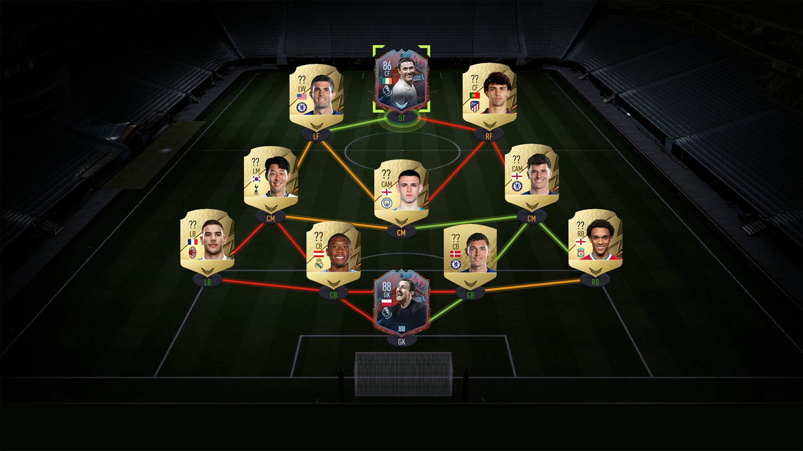

So what is FIFA Ultimate team that everyone becomes addicted to in FIFA? FIFA Ultimate Team (commonly called FUT or sometimes UT) is a mode in FIFA. It enables you build teams using any players from all the leagues to play offline and online to win coins to buy better players or packs which contain random players
Online you can play Division Rivals and qualify for the FUT Champions Weekend and even qualify for major EA events to compete against professional FIFA players. FUT Drafts gives a choice of 5 players for each position so you can get to use all the best players without needing to actually build your own team. It does cost 15k coins to enter however. The better you do in 4 games the greater the rewards. Offline you can play Squad Battles and as with Rivals you gain rewards the better you do each week. For the first time you can now play FUT Co-Op online with a friend. Meaning you can be in different locations and play on the same team. Other big parts of FIFA Ultimate Team are Squad Building Challenges (SBCs) and Objectives. To complete SBCs you create squads to submit in exchange for rewards or players. Objectives are monthly and weekly, setting gameplay challenges to again unlock rewards. Players, points, coins, club features etc.